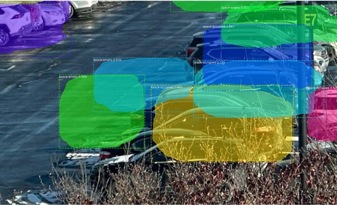
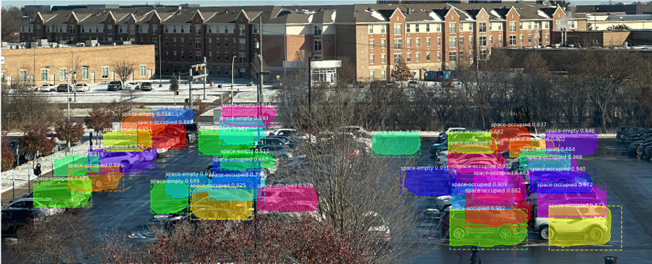

$ cat daps/README.md
Independent Project · October 2024
Parking occupancy from a camera — no per-space sensors required
DAPS instance-segments occupied vs. open parking spaces straight from existing lot cameras, replacing per-space hardware.
Role
Solo — end-to-end: data, training, evaluation
Goal
Detect open spaces without installing per-space sensors
Key outcome
0.86 avg IoU · 0.90 precision/recall
Stack
Python · PyTorch · Mask R-CNN (ResNet50-FPN)
0.86
average IoU on occupied vs open space segmentation
0.90
precision and recall — reliable enough for live guidance
12,416
lot-camera images used for training and evaluation
Hardware sensors don't scale; cameras are already there
Per-space occupancy sensors cost money for every single spot. Lots already have cameras — the problem is turning oblique, overlapping views into per-space occupancy, which needs instance segmentation, not just detection.
01Adapted Mask R-CNN (ResNet50-FPN) to instance-segment occupied vs open spaces from lot cameras.
02Trained and evaluated on 12,416 images of real lots.
03Reached 0.86 avg IoU and 0.90 precision/recall — with zero added hardware per space.
- 0.86 average IoU, 0.90 precision/recall on occupied-vs-open segmentation
- Works from existing lot cameras — no per-space sensor install
- Solo project — full pipeline from data to evaluation

Fig 1 — per-space occupancy from a single camera view

Fig 2 — dense lot, occupied vs open with confidence scores
instance segmentationMask R-CNNResNet50-FPNPyTorchdataset curationmodel evaluation